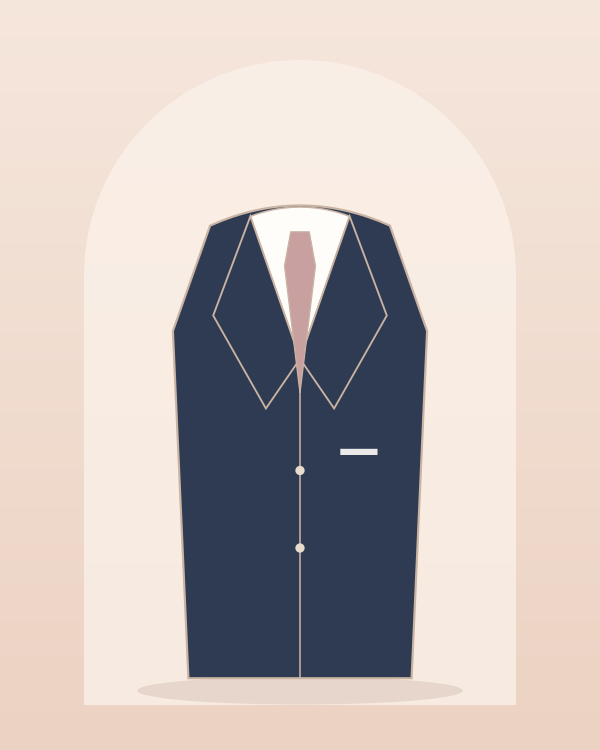
Костюм-двойка «Классик» темно-синий
Шерстяная ткань, мягкая линия плеча и базовый крой. Подходит для любого времени года.
от 34 000 ₽
Нижний Новгород · свадебный салон & ателье
Классические двойки, тройки, смокинги и светлые летние костюмы. Подберём цвет и посадку, подгоним в ателье за 3–5 дней и сочетаем образ жениха с платьем невесты.
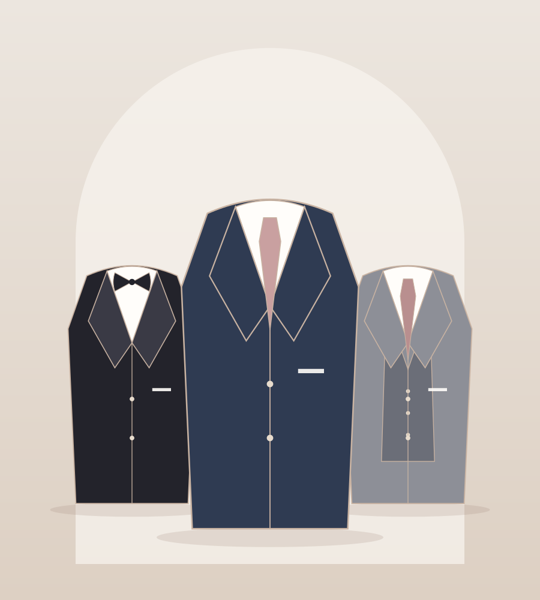
Классические силуэты из шерсти, льна и бархата. Расскажите о дресс-коде и палитре — подберём оттенок, который сочетается с платьем невесты и общим стилем свадьбы.

Шерстяная ткань, мягкая линия плеча и базовый крой. Подходит для любого времени года.
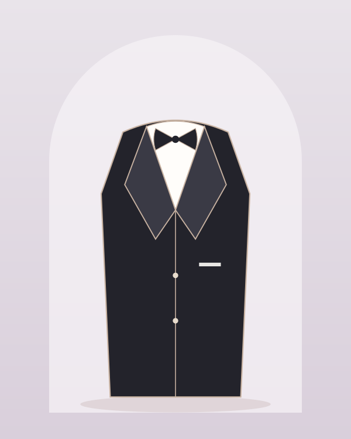
Торжественный образ для вечерней церемонии. Комплектуется бабочкой и рубашкой.
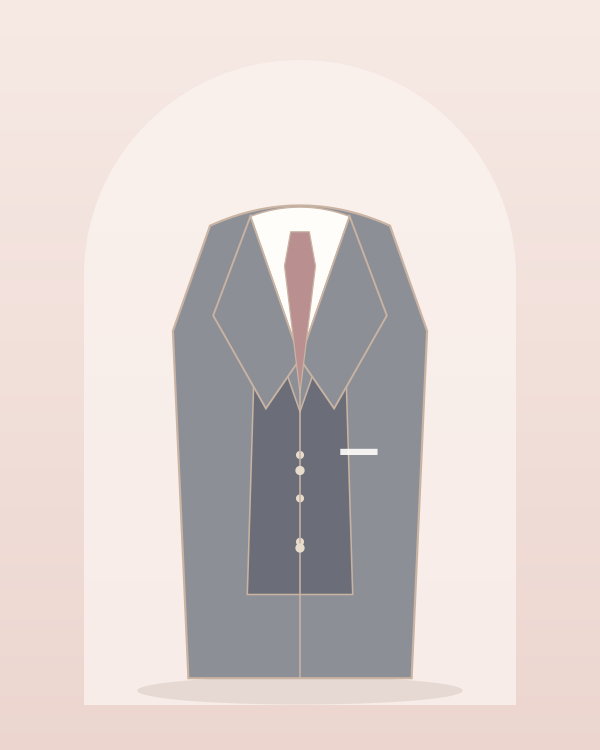
Пиджак, брюки и жилет на пуговицах. Строгая классика с акцентом на фигуру.
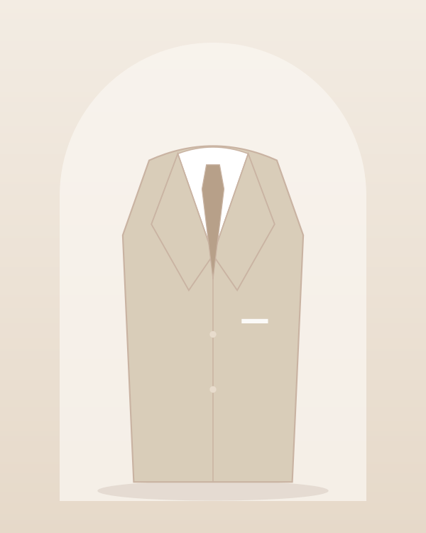
Лёгкий бежевый костюм для летней свадьбы и церемоний на открытом воздухе.
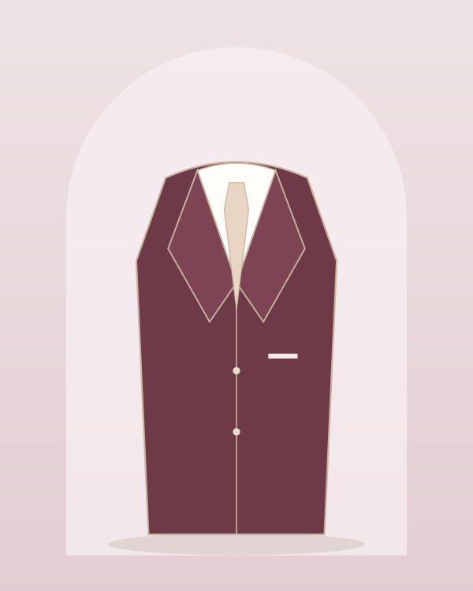
Глубокий винный оттенок и мягкая фактура — для осенних и зимних свадеб.
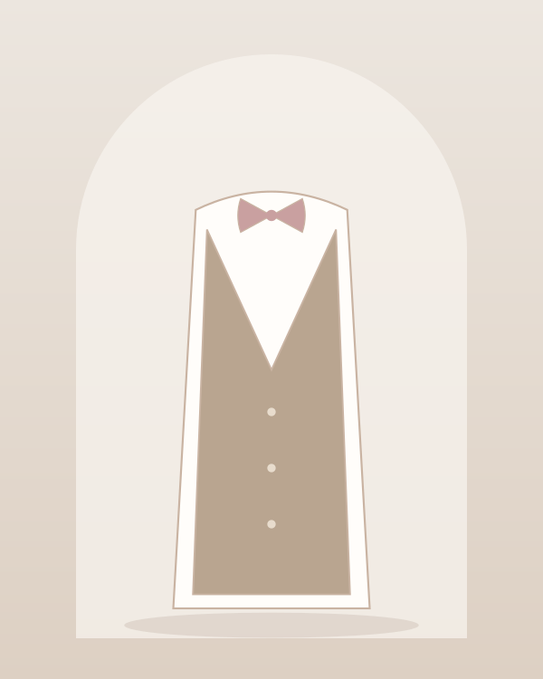
Лёгкий вариант для жениха и друзей: жилет, бабочка и рубашка в одном стиле.
Цены указаны ориентировочно; точная стоимость и наличие — в салоне.
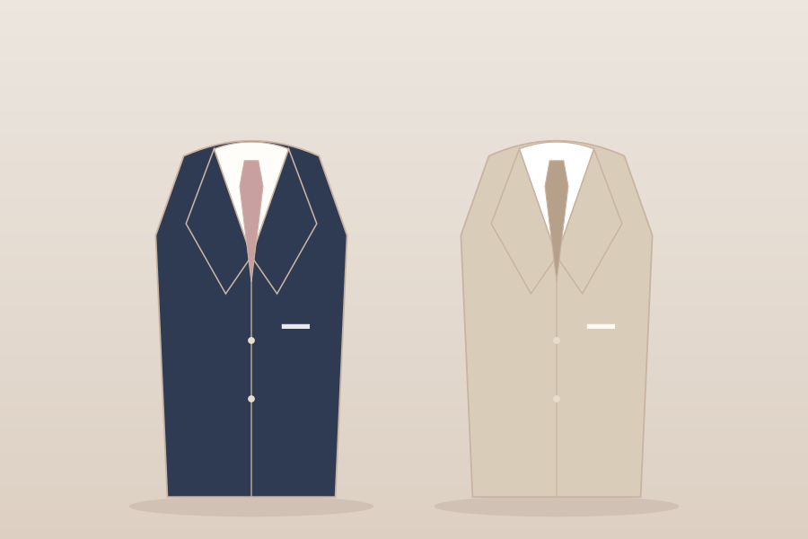
Тёмно-синий и графитовый подходят для любого сезона и уместны днём и вечером. Светлый бежевый и серый — для лета и свадеб на природе, а чёрный лучше оставить для формальных вечерних церемоний.
Современный крой slim выглядит стильно на стройных фигурах, классический — удобнее и подходит большинству. Консультант подскажет, что лучше сидит именно на вас.
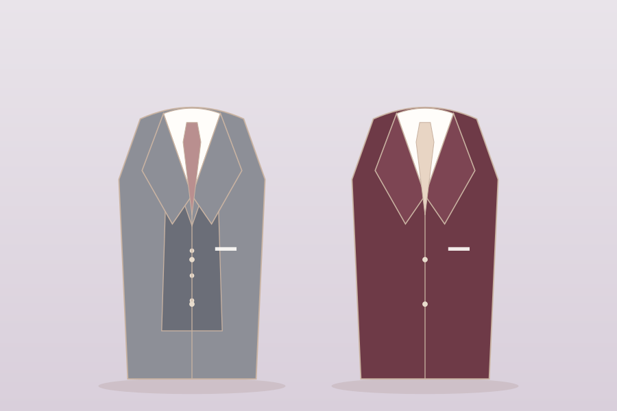
Образ жениха должен звучать в унисон с платьем: пышное торжественное платье требует более строгого костюма, а лёгкое бохо — мягких тканей и приглушённых цветов.
Если палитра свадьбы бордовая или пудровая, подберём аксессуары — бабочку, галстук, платок — в тон декору.
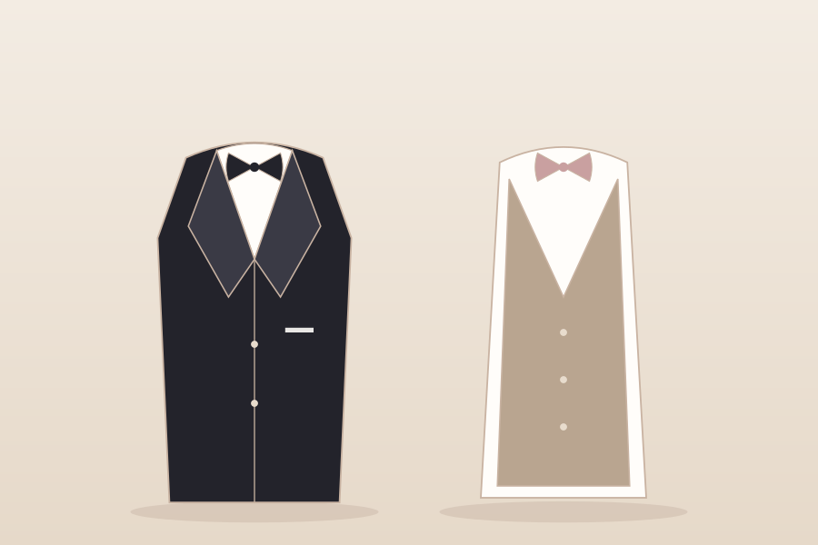
Мы подгоним длину рукавов и брюк, посадку по плечам и талии. Обычно хватает одной-двух примерок, срок — 3–5 дней.
Для сложной переделки или пошива костюма с нуля подключаем ателье при салоне.
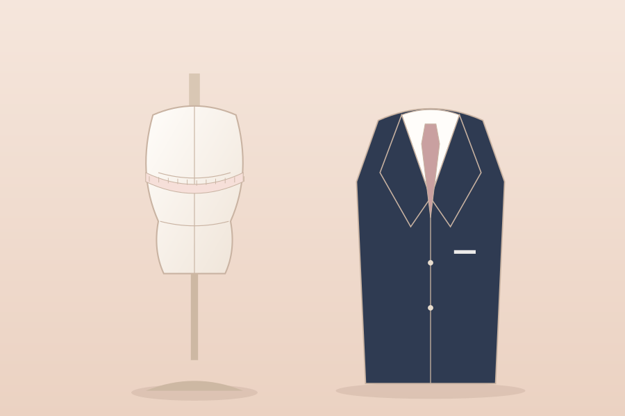
Можно подобрать единые жилеты и бабочки для друзей жениха в цвет свадьбы. Мы поможем с размерами и сроками, чтобы все образы были готовы к одному дню.
А пока невеста выбирает платье, жениху стоит заглянуть на примерку — это займёт около 40 минут.
Расскажите о дате, сезоне и палитре свадьбы — подберём варианты.
Примерьте 2–3 костюма, выберите посадку и цвет.
В ателье подгоним рукава, брюки и талию под вашу фигуру.
Отпарим костюм и передадим с аксессуарами в чехле.
Оптимально за 2–3 месяца: этого достаточно для подбора и подгонки. Если время ограничено, предложим модели из наличия — их можно подогнать за 3–5 дней.
Нейтральные тёмно-синий, серый и бежевый подходят к платьям любого оттенка айвори. Для винных и пудровых палитр добавьте бабочку или платок в тон декору.
Да. На примерке вам предложат рубашки, бабочки, галстуки, подтяжки и платки. Всё можно подобрать в одном месте.
Да, в ателье можно заказать костюм с нуля: снимем мерки, выберем ткань и проведём две-три примерки. Срок — от четырёх недель.
Размерный ряд 44–62 и ателье позволяют подогнать костюм практически под любую фигуру: изменим посадку, длину и ширину.
Оставьте телефон — мы перезвоним в течение дня и подберём удобное время.